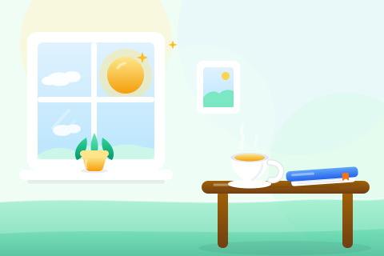
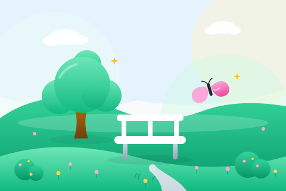
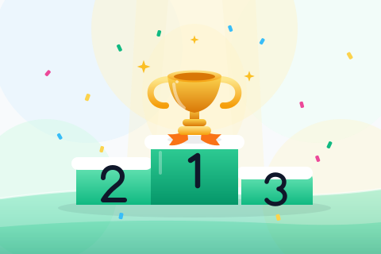

Kebiasaan — gaya hidup & olahraga (batch 1)6
sepeda.svgbersepedarenang.svgberenangyoga.svgyoga pose pohonperegangan.svgperegangan tubuhlompat-tali.svglompat talihiking.svgmendaki gunungKebiasaan — kesehatan & kreativitas (batch 2)6
vitamin.svgminum vitaminteh.svgwaktu minum tehmelukis.svgmelukis di paletgitar.svgbermain gitarmusik.svgdengar musik (headphone)berkebun.svgmenyiram tanamanKeuangan (batch 3)6
qris.svgbayar QRIS dari ponseltagihan.svgbayar tagihan (stempel lunas)donasi.svgberbagi donasitumbuh-koin.svgdana tumbuh (koin + kecambah)sarang.svgtelur emas di sarangpayung.svgperlindungan anggaranTumbuh & pencapaian (batch 4)6
bunga-matahari.svgmekar penuh semangatkupu-kupu.svgtransformasi kebiasaanlebah.svgproduktif setiap haribonsai.svgkesabaran merawatpanen.svghasil konsistensikunci.svgpencapaian terbukaWawasan & alat (batch 5)6
teropong.svgmelihat wawasan lebih jauhkompas.svgarah tujuan yang jelaspeta.svgperjalanan membangun kebiasaanjam.svgwaktu yang konsistenawan.svgcadangan tersimpan amankado.svghadiah pencapaianKebiasaan aktif lanjutan (batch 6)2
tinju.svglatihan tinjujantung.svgkesehatan jantung (ECG)Kreatif & tenang (batch 7)5
piano.svgbermain pianomenulis.svgmenulis kreatif (pena + kertas)foto.svgfotografi (kamera retro)menyanyi.svgmenyanyi (mikrofon)kerajinan.svgkerajinan tangan (benang & jarum)Sosial & belajar (batch 8)8
kode.svgbelajar coding (laptop)bahasa.svgbelajar bahasa (balon percakapan)menelepon.svgmenelepon keluargakeluarga.svgwaktu keluarga (rumah)sahabat.svgbertemu sahabat (sodor tinju)catur.svgbermain catur (kuda)teka-teki.svgmenyusun puzzlemenyiram.svgmenyiram tunas mudaSistem, UI & produktivitas (batch 9)5
jam-pasir.svgwaktu berjalulonceng.svgpengingatkirim.svgkirim (pesawat kertas)energi.svgenergi harian (baterai)laporan.svglaporan mingguan (grafik batang)Lencana & pencapaian (batch 10)6
mahkota.svgmahkota juaraberlian.svgpermata langkakunang.svgkunang-kunang senjapelangi.svgsetelah hujanmeteor.svgbintang jatuhlentera.svglentera harapanTeman pohon — varian tanaman (batch 11)7
kaktus.svgkaktus berbungasukulen.svgsukulen rosettebambu.svgrumpun bambujamur.svgjamur sepasangsakura.svgpohon sakura (musim semi)gugur.svgpohon musim gugursalju.svgpohon musim dinginScene Hero 480×3203

scene-pagi.svgrutinitas pagi (jendela, teh, buku)
scene-taman.svgtaman tenang (pohon, bangku, jalur)
scene-juara.svgperayaan juara (podium, piala, konfeti)